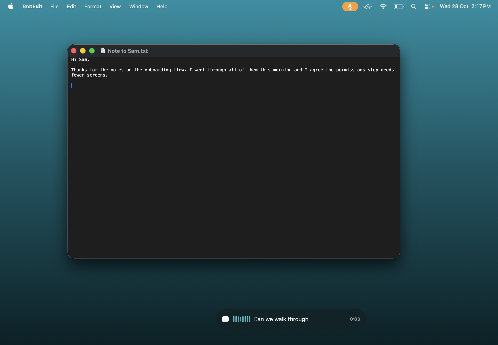

Black Friday offer
For Apple silicon Macs · macOS 26 or later
Mac dictation.
$29 once.
Hold a shortcut, speak, and QuietSpeech types where your cursor is. On-device by default, with no subscription or account.
Black Friday price · Planned price after this offer: $59 USD.
Opens an email draft. Send it to yourself to open on your Mac.
One payment. Two Macs. 14-day refund.
No free trial. Any applicable tax is shown at checkout.
You say
“Hey Priya, I’ve finished the notes. Let’s catch up tomorrow.”
QuietSpeech types
Hey Priya, I’ve finished the notes. Let’s catch up tomorrow.
One shortcut, wherever you write
Say it, and it’s written.
See your words appear in a live overlay as you speak. Release the shortcut to insert the finished text. You can also select text and speak an edit, or say “generate” to ask for a draft. Local AI editing and generation need Apple Intelligence.

On your Mac, by default
Apple’s recognizer transcribes locally. Apple Intelligence cleans up the text on your Mac when available. No API key needed for the default setup.
Words you can follow
The live overlay shows your transcript while you dictate, so you can follow what’s being recognized before you let go.
Two Macs, one payment
Your $29 license activates two Macs. Move an activation between Macs in the customer portal.
Choosing a dictation app?
Compare features and purchase options.
Compare the Mac dictation features and purchase options that matter to your workflow.
Swipe the tables to compare all apps.
| Feature | QuietSpeech | Wispr Flow | Superwhisper | VoiceInk |
|---|---|---|---|---|
| Live words while dictating | Yes Live overlay by default | Finished text after you stop | Yes, with Pro and a supported streaming model | Yes, with a supported streaming model |
| On-device transcription | By default Apple’s recognizer | Cloud transcription; internet required | Local models available | Local models available |
| AI text cleanup | Apple Intelligence on-device, when available | Automatic cleanup; internet required | Local or cloud language models with Pro | On-device Refine (16 GB+ RAM) or your chosen provider |
| Custom vocabulary and replacements | Vocabulary and word replacements | Dictionary and corrections | Vocabulary and text replacements | Dictionary and word replacements |
Live preview means seeing words while you dictate, before the finished text is inserted. This comparison covers Mac dictation, not meeting note-taking. Availability depends on the plan, model and device. QuietSpeech’s local AI cleanup needs Apple Intelligence; VoiceInk Refine needs a supported Mac and a model download.
| App | Purchase options | What to check |
|---|---|---|
| QuietSpeech | Black Friday: $29 once for two Macs Planned price after this offer: $59. No subscription or account. 14-day refund. | Apple silicon, macOS 26+. On-device by default. Apple Intelligence for local AI editing and generation. |
| Wispr Flow | Free tier and paid subscriptions. Pro is listed at $15/user/month on monthly billing. | Cross-platform options and team features. Free and paid tiers have different limits. |
| Superwhisper | Free tier, monthly, yearly and lifetime options. | Local and cloud model choices. Check the selected plan’s current price and features. |
| VoiceInk | $25 once for one Mac. $39 once for two Macs. | Published offers include lifetime updates and a 14-day refund. |
Competitor features and offers can change. These tables summarize published documentation and purchase options, not an accuracy or speed benchmark. QuietSpeech is independent of these products.
Before you buy
A few useful details.
Will it work on my Mac?
You need an Apple silicon Mac running macOS 26 or later, plus Microphone and Accessibility permissions. Intel Macs and older macOS versions are not supported.
Does it work without Apple Intelligence?
Basic dictation still works, with rules-based cleanup. Turn on Apple Intelligence for local AI cleanup, spoken editing and generation.
Does anything leave my Mac?
Transcription and cleanup run on-device by default. If you choose OpenAI, Groq, Ollama or a custom provider, selected audio or text goes to that provider. The app has no telemetry. This website uses analytics; optional Google advertising measurement is described in our website privacy notice.
Can I use it offline?
Yes, by default. The license needs an internet check at least once every 14 days. Optional external providers need their own connection.
Is there a free trial?
There is no free trial. Watch the demonstration before you buy. If QuietSpeech isn’t right for you, you have 14 days to request a refund.
One shortcut.
One payment.
Black Friday: $29 USD once for two Macs.
Planned price after this offer: $59 USD.
Apple silicon · macOS 26+.
Opens an email draft. Send it to yourself to open on your Mac.
14-day refund. No subscription.